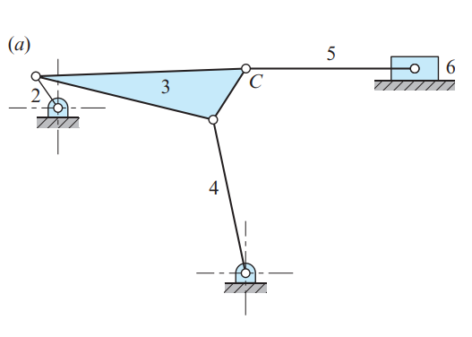
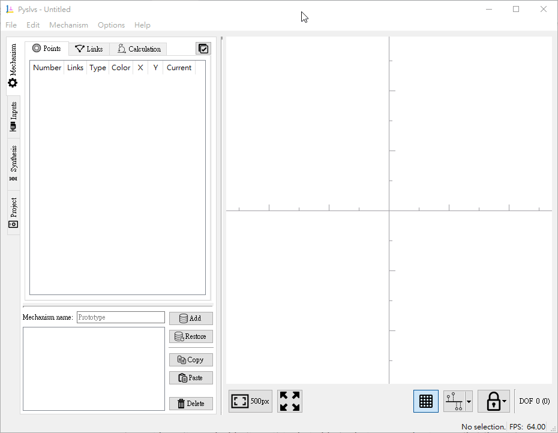
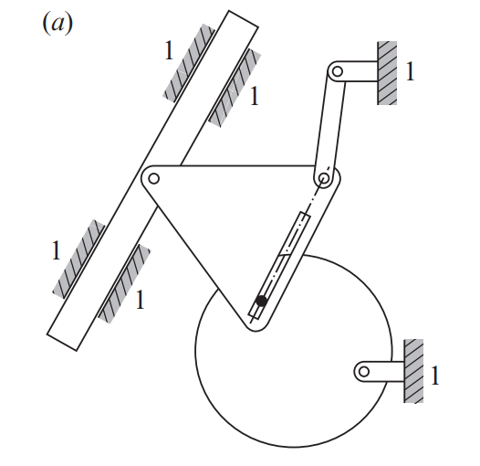
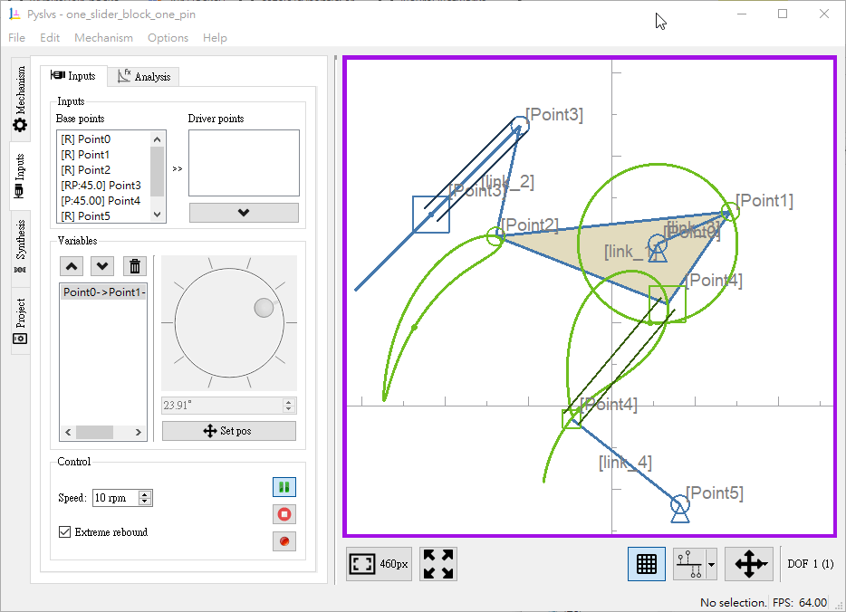
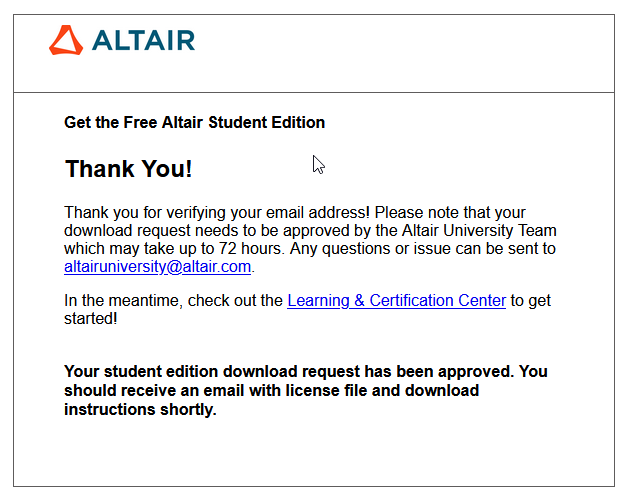

W7 <<
Previous Next >> HW3
W8
利用 ANSI C 進行設計分析:
ctutor.pdf (C Tutorial)
https://www.programiz.com/c-programming/examples/ (C 程式範例)
http://mde.tw/cp2020/content/HW3.html (嘗試利用 Python, C 或 Dart 解題)
C 建立動態連結程式庫, 並與 Python 結合應用:
以整數資料結構串接 C 與 Python:
tcc -w -shared -DLIBTCC_AS_DLL -DONE_SOURCE multiply.c -o multiply.dll
multiply.c
#include <stdio.h>
int multiply(int, int);
__declspec(dllexport) int
multiply(int num1, int num2)
{
return num1 * num2;
}
multiply.py
import ctypes
lib = ctypes.CDLL('./multiply.dll')
result = lib.multiply(3, 2)
print(result)
以浮點數資料結構串接 C 與 Python:
tcc -w -shared -DLIBTCC_AS_DLL -DONE_SOURCE multiply_float.c -o multiply_float.dll
multiply_float.c
#include <stdio.h>
float multiply(float, float);
__declspec(dllexport) float
multiply(float num1, float num2)
{
return num1 * num2;
}
multiply_float.py
import ctypes
lib = ctypes.CDLL('.\multiply_float.dll')
# By default functions are assumed to return the C int type. Other return types can be specified by setting the restype attribute of the function object.
lib.multiply.restype = ctypes.c_float
result = lib.multiply(ctypes.c_float(3.0), ctypes.c_float(2.0))
print(result)
平面機構設計分析:
2017_SOLVING MULTIBODY DYNAMICS PROBLEMS USING PYTHON.pdf
2016_Bookmatter_FundamentalsOfMachineTheoryAnd.pdf
Solvingaplanarfour-barlinkagesdesignproblem.pdf
Fourbar_Lagrange_10.pdf
A review of simple analytical methods for the kinematic synthesis of four-bar and slider-crank function generators for two and three prescribed finite positions.pdf
https://www.moorepants.info/blog/npendulum.html
https://juliarobotics.org/RigidBodyDynamics.jl/dev/generated/3.%20Four-bar%20linkage/3.%20Four-bar%20linkage/
Pyslvs_UI
https://github.com/KmolYuan/Pyslvs-UI
http://www.pyslvs.com/


six_bar_with_slider.pyslvs (Pyslvs-UI 20.10.0)


one_slider_block_one_pin.pyslvs (Pyslvs-UI V 20.10.0)
2018_Optimal Synthesis of Four-Bar Linkage Path Generation throughEvolutionary Computation with a Novel ConstraintHandling Technique.pdf
Altair Hyperworks student edition:
https://altairuniversity.com/free-altair-student-edition/
使用 @gm 進行註冊, 並提供電腦的網路卡 MAC Address 後, 可以取得一年免費的 Hyperworks 相關的程式套件安裝許可.
學生版免費 Altair 套件限制: https://altairuniversity.com/altair-student-edition-limitations/
以下為申請下載套件過程的系統回覆畫面:

https://altairuniversity.com/free-altair-student-edition/
W7 <<
Previous Next >> HW3